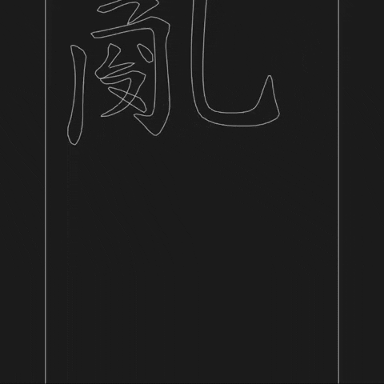
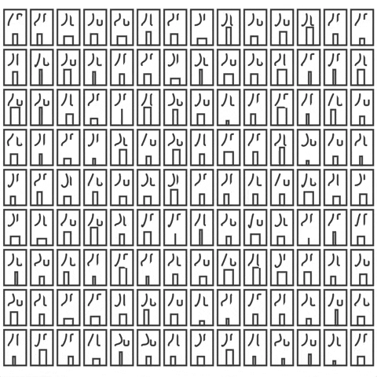
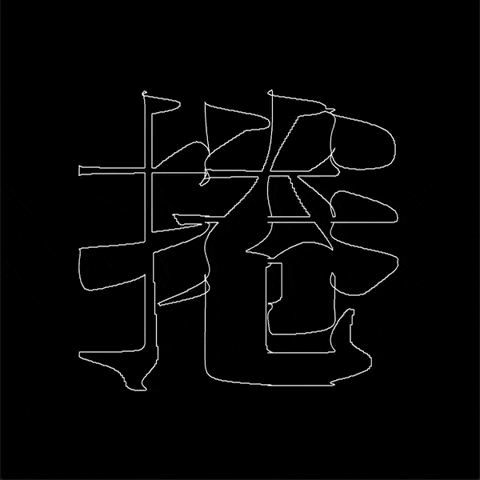
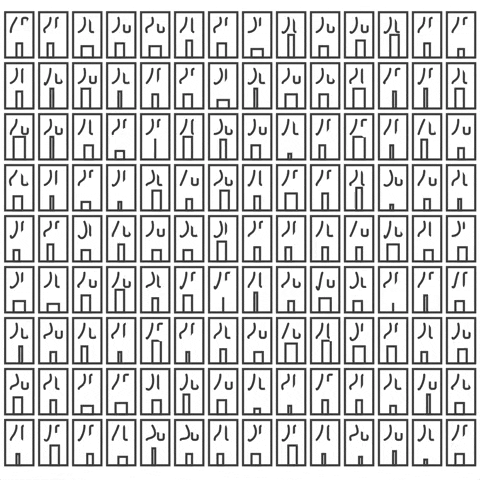
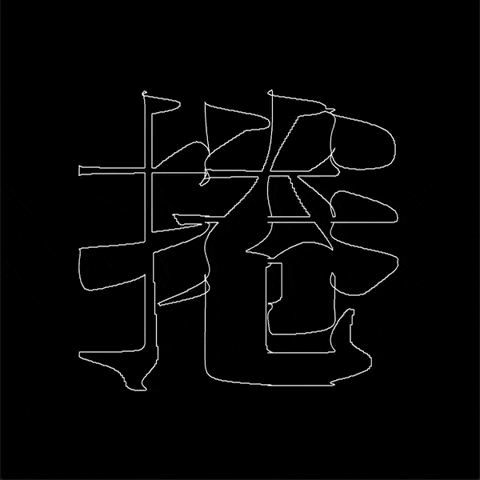

Sketches
openFrameworks, Processing, Max/MSP, TouchDesigner, GLSL







openFrameworks, Processing, Max/MSP, TouchDesigner, GLSL
HTML5 canvas, p5.js, Three.js
Lost Code is a graphic design project exploring the friction in translation. Made with Paper.js. Featured on It's Nice That!
Design by Hilda Wong. Development by Ellen Lo.
Axis Mundi is an experimental exhibition project exploring man’s attempt to override nature with technology and nature’s resistance. Made with p5.js. Featured on klikkenthéke!
Identity design by Hilda Wong. Web and installation development by Ellen Lo.

I led a code-based design workshop for first year MFA graphic design students at MICA. The workshop aims at introducing p5.js as a design tool. Over the course of 3 days, the students designed and coded an interactive calendar for the year 2020.
Portfolio site for Kelly Li, featuring her photography, reel, and 2D animations as stickers which users can drag around.
Design by Kelly Li. Dev by Ellen Lo.
C/C++, Python, Arduino, Raspberry Pi, Linux Kernel Programming, Qt
The kinetic sculpture is a work of collaboration with Jake Abraham. It was developed over the course of our internships at Volvox Labs. It comprises 16 micro servos with custom cut servo arms, 1 Arduino Uno, a 12" x 12" cheesecloth, steel cables, crimps, 3 Aluminum rods, and plywood.
The triptych is a 95” by 40” digital canvas mounted onto the wall. The lights are encapsulated in a custom CNC cut alucobond frame with patterns. They mimic the natural flow of fluids through a scalloped-like pattern. By using LiDAR sensing technologies, distance between each canvas and any object in front becomes the major interface for interaction.
Unity, OpenCV, HTC Vive, Leap Motion, Kinect
1st face filter made with Spark AR – I used SDF circles, moved them randomly with noise, and applied SDF Union on multiple layers to create the blobs and mask the face mesh.